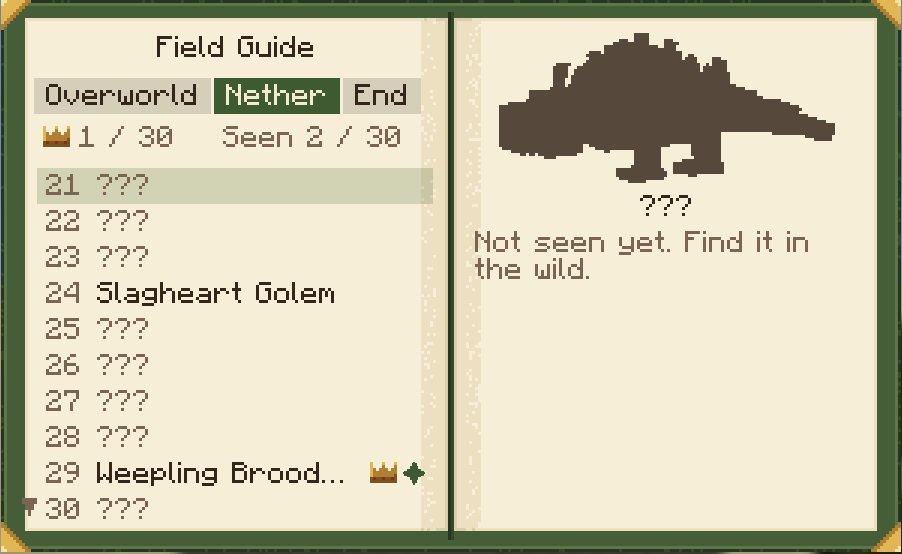
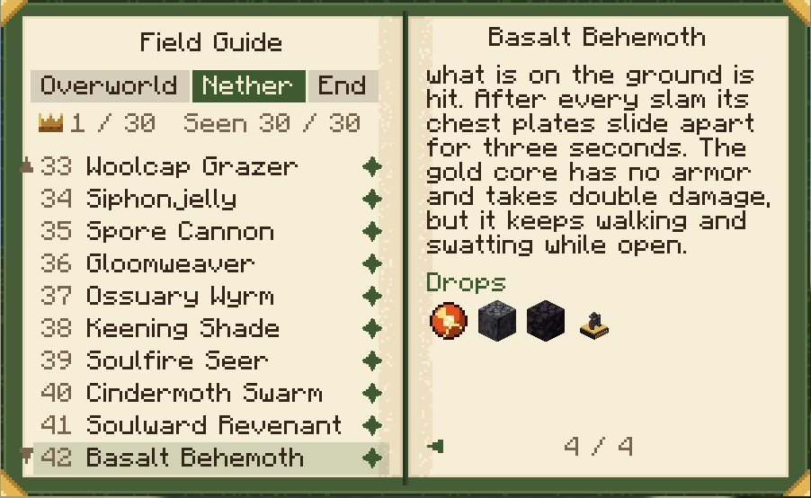
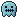
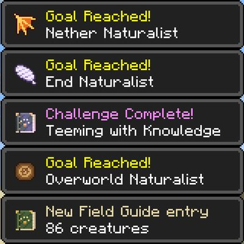
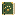

Guide
The Field Guide, trophies, charms, effects and advancements, then the config, the commands and the notes for modpacks.
The Field Guide
Craft a Field Guide: a book and any signature material (recipe). Use it (right-click) to open it. It has a tab for each dimension, Overworld, Nether and End, and a page for each of their 90 creatures, in the order of the bestiary.
- A creature you haven't met shows only its silhouette: "Not seen yet. Find it in the wild."
- Once you've seen it, its page shows the creature turning, its home and its role, and a toast says "New Field Guide entry".
- After 3 kills (the server can change the number) the rest fills in: its tell and counter, its drops and the looks you've seen. A second toast says "Field Guide: revealed".
- Each tab counts the creatures seen and the trophies you own, and a crown marks a creature whose trophy you have.





Trophies
Any Teeming creature killed by a player can drop its trophy: a figurine of it, in the
look it had, on a dark plinth with a brass nameplate. The chance is 2.5%, +1% per Looting level, from a player's kill; for the apex mobs
it is 10%, +2% per Looting level, from a player's kill. Place it like a block; broken, it keeps its creature and look. The server config
sets the chance (trophies.chance).

Counter charms
12 charms, four for each dimension's mobs, crafted from signature materials. Wear one in your off-hand. Every charm and its recipe.
Status effects
Some creatures leave you with one of these.
| Effect | What it does |
|---|---|
| Sunder | Your armor is cracked: each stack takes away 4 armor points until it wears off. |
 Silenced | You can't use items: no eating, drinking, bows, shields or throwing. |
| Void Rot | Your body won't mend: no natural regeneration, and all healing is halved. |
| Heavy | You are weighed down: no jumping, you fall faster, and Levitation and Slow Falling don't work. |
| Nulled | You stand in a Nullcantor's ring: the enchantments on your gear do nothing. Curses still hold. |
| Swallowed | Something is holding you: swallowed, coiled or gripped. |
Advancements
15 in their own tab, from the first creature you see to a trophy of every one.


| Advancement | For | Kind |
|---|---|---|
 Teeming | See a Teeming creature. A book and any signature material it drops make a Field Guide. | Advancement |
| A Charm for It | Get a counter charm to wear in your off-hand. | Advancement |
| Step aside so a charging Thornhorn hits a wall instead of you. | Advancement | |
| Quench a Slagheart Golem with a snowball, splash water, powder snow or a Quench Charm hit. | Advancement | |
| Ride a Magma Tortoise 16 blocks across lava (feed it magma cream to steer it). | Advancement | |
| Stay within 12 blocks and in sight of a Grand Orrery through a whole pattern, with no mote touching you or your shield. | Goal | |
| Kill a Basalt Behemoth. | Goal | |
| Kill a Liftstone Monolith. | Goal | |
| Kill a Grand Orrery. | Challenge | |
| Own a trophy of a Teeming creature. | Advancement | |
| Own a trophy of all 90 Teeming creatures. | Challenge | |
| See every Teeming creature of the Overworld. | Goal | |
| See every Teeming creature of the Nether. | Goal | |
| See every Teeming creature of the End. | Goal | |
| Teeming with Knowledge | Reveal all 90 creatures in the Field Guide. | Challenge |
Configuration
The server's settings apply to everyone; clients only show the Field Guide's kill count. NeoForge keeps them in config/teeming-synced.toml (one file for every world, sent to joining clients). Fabric keeps them in config/teeming.properties, read once at startup: restart after a change. Fabric doesn't send the file to clients, so a client whose own file switches off other mobs than the server's lists a different set of creatures in its Field Guide. Both files are written with the defaults on first start, and a newer version adds its new keys to an existing file. On Fabric a start that changes the file (a new key, or a newer header) writes the mod's keys in the order below under the current header, and keeps every value, the comments above a key (with that key), keys the mod doesn't read (after its own) and comments after the last key; comments at the very top of the file are taken for the old header and replaced. A value out of range is brought into it, with a warning in the log. A file saved as UTF-16 with a byte-order mark (as Notepad's "UTF-16" and Windows PowerShell's Out-File save it) is read as such and rewritten as UTF-8, and a key the mod doesn't read (a typo, or a pack's own key) is kept and named in a warning in the log.
Teeming heeds the world's own switches: on Peaceful, or with the game rule spawn_monsters (or spawn_mobs) set to false, none of its monsters spawn naturally, from the biome lists or from its own spawner; its creatures stop only with spawn_mobs.
| Key | Default | What it does |
|---|---|---|
spawningDensity | 1.0 | 0 to 4. Below 1 it thins natural spawns: each one that passed every other rule goes ahead with this chance (0 turns them off). Above 1 it only raises the local caps (spawning.local_cap times it, apex mobs and giants included); how often a Teeming mob is picked, and its share of each biome's spawns, stay the same |
endMainIslandAfterDragon | true | The main island's End mobs appear only after the dragon has been killed |
fieldguide.killsToReveal | 3 | Kills of a mob that reveal its tell, counter, drops and looks in the Field Guide (1 to 100) |
griefing.temporary_blocks | true | False stops every mob placing even temporary blocks (the Gloomweaver raises no walls) |
spawning.local_cap | 3 | At most this many of one Teeming mob type within 48 blocks (1 to 16); apex mobs and giants at 1 in 128. Both are multiplied by spawningDensity when it is above 1 |
trophies.chance | 0.025 | The chance a player kill of an ordinary Teeming mob drops its trophy (apex mobs four times it; Looting raises it in proportion) |
mobs.<id>.enabled | true | False stops that mob's natural spawns; spawn eggs and commands still work |
mobs.<id>.spawnChance | 1.0 | 0 to 1, the chance a natural spawn that passed every other rule goes ahead |
Commands
All need operator permission (level 2).
/teeming guide reveal <players> <mob|all>fills in Field Guide entries;/teeming guide reset <players> <mob|all>clears them. A reveal also awards the Field Guide advancements the entries now earn (the first sighting, each dimension's Naturalist once all its creatures are in, and withallthe one for revealing every creature), announced in chat like any advancement; a reset doesn't take them back./teeming look <entity> <look>gives a Teeming mob one of its looks./teeming spawns <mob>tells where and how often a mob spawns in the dimension you're in, and whether it can where you stand. For a mob of Teeming's own spawner whose rule needs a particular spot, it answers by that spot: a fortress or bastion mob outside its structure gets "no, only inside ..."; a lava-sea, fungus-cap, island-edge, underside or void mob gets "where its rule fits" and the spot, not a yes. A mob both on the biome lists and placed by a rule (the Aurovore, the Astral Augur, the Nullcantor and the Resonant Triad) gets a line naming where its rule places it, beyond the biomes listed.
Modpacks and data packs
Teeming adds no biomes, structures or dimensions, so it sits beside any pack. Its spawns, drops, recipes, looks and advancements are data a pack can change. Everything below is the full reference.
Nearly everything a pack would change is data under data/teeming/. The exceptions are code on both loaders: the spawn weights on Fabric, the weights and rules of the mobs Teeming's own spawner places, and the items some mechanics drop on top of a loot table (listed under drops below).
- Where each mob spawns: biome tags
#teeming:spawns/<mob>. Add a biome (or a tag such as#c:is_forest) to give a mob that biome. Mobs on the biome lists stop spawning when their tag is emptied; mobs that only Teeming's own spawner places (fortress, lava sea, End islands and the like) spawn wherever their rule fits when their tag is empty. Four mobs are both on biome lists and placed by a spawner rule: the Aurovore (bastions), the Astral Augur and the Nullcantor (the main island, after the dragon) and the Resonant Triad (the End's open sky). Emptying their tag stops them both ways; while it holds anything, their rule places them wherever it fits, whatever biomes the tag names (a bastion stands in four Nether biomes). To switch a mob off either way, usemobs.<id>.enabled. Only that key also takes the mob out of the Field Guide's list and the collection advancements (each dimension's Naturalist, Teeming with Knowledge, The Whole Menagerie): a mob stopped by an emptied tag orspawnChance=0still counts there, so they can't be finished in a world where it never spawns. The biome lists read the tags once, when the server starts; Teeming's own spawner and/teeming spawnsread them live. So after a/reloada changed tag changes the spawner's placements and the command's answers at once, and the lists only after a restart.#teeming:share_cappedholds Nether biomes whose vanilla monster list is too small to share, where Teeming's own spawner places their monsters instead (by default the crimson and warped forests, and biome mods' biomes in#c:is_nether_forest,#c:primary_wood_type/crimsonor#c:primary_wood_type/warped). A biome in the tag gets no Teeming monster from the biome lists, tuned vanilla biomes included, on both loaders: a Nether biome added to it gets the spawner's placements of the monsters whose tags hold it, kept to about 1 in 5 of the monsters round the player. That spawner doesn't run in the Overworld, so an Overworld biome added to the tag gets no Teeming monsters at all (the deep dark and the mushroom fields are in it by default, where no monster spawns anyway). Creatures keep their lists in either. A biome in#c:no_default_monsters(vanilla's mushroom fields and deep dark) gets no Teeming monster from the lists or the spawner, so one entry there clears a biome mod's biome of them; creatures still spawn. - Biome mods' End biomes:
#teeming:modded_end(by default#c:is_endand#minecraft:is_end) is how they get the outer islands' mobs. Each outer-island list mob's tag holds it, so emptying the mob's tag takes the mob out of them too. The tag holds vanilla's five End biomes as well; Teeming leaves those five out wherever it reads the tag, so a mob still spawns only in its own vanilla End biomes. This means that among vanilla's five End biomes an End mob's tag doesn't move it: 38 of the 40 End mobs' tags hold all five through#teeming:modded_end, so taking a vanilla End biome out of the tag leaves the mob there, and adding one gives it nothing (/teeming spawnslists the vanilla End biomes a mob really gets). To keep a mob out of a vanilla End biome, replace its tag ("replace": true) with one that leaves#teeming:modded_endout and names the biomes it should keep, a biome mod's End biomes by id (#c:is_endwould bring vanilla's five back). Then the six region mobs of Teeming's spawner (the Underclinger, Abyss Angler, Brinkray, Wingshear, Grand Orrery and Driftsong) go by their tag biome by biome, and a biome-list mob keeps only the vanilla End biomes it had that the tag still names. A biome-list mob can't be given a vanilla End biome it doesn't have through its tag: on NeoForge add aneoforge:add_spawnsbiome modifier of your own; on Fabric there is no way. Don't add the tag (or#c:is_end) to another mob's tag: that mob would get every modded End biome, and vanilla's five End biomes too, at its rest weight (only the outer-island mobs whose tags hold it by default leave vanilla's five out). No End list mob spawns naturally within 1024 blocks of the origin (the main island's area, whatever its biome) except the main island's own mobs, once the dragon is dead. In a biome mod's End biome one more Teeming monster spawns only while Teeming's don't outnumber the other monsters within 128 blocks, since the lists assume endermen in groups of four: a biome with few monsters of its own gets few of Teeming's, and monsters a pack adds there raise Teeming's number with them. - Biome mods' Nether biomes: the open-ground Nether monsters' homes name vanilla biomes only, so a biome mod's Nether biome tagged only
#c:is_nethergets 7 of the 30 Nether mobs: the Lavaleaper and the Magma Tortoise from the biome lists, and the Soot Manta, the three fortress mobs and the Aurovore from Teeming's spawner. The fortress mobs and the Aurovore come only where a nether fortress or a bastion generates in that biome, which the structures' own biome tags decide. One in#c:is_nether_forestwithout a wood-type tag also gets the Gleamtrap, under the share cap, on fungus caps with wart blocks under them; one in#c:primary_wood_type/crimsonor/warpedgets that forest's mobs, under the share cap. Add the biome to a mob's tag to give it more. - Spawn costs: vanilla's soul sand valley charges each of its monsters a spawn cost (0.7, energy budget 0.15), which keeps them from crowding together. Teeming gives its 7 valley mobs the same: on NeoForge through
data/teeming/neoforge/biome_modifier/spawn_costs/soul_sand_valley.json(replace it by id to change the numbers or the mobs), on Fabric in code. A mob a pack adds to the valley through its tag gets no cost, so it out-spawns the rest there; add it to that file'sentity_typeson NeoForge. - How often and in what groups (NeoForge): each biome-list mob's spawn weight and group size are NeoForge biome modifiers.
data/teeming/neoforge/biome_modifier/spawns/<mob>/<biome>.jsongives it a weight tuned to one vanilla biome's monster list.spawns/<mob>.jsongives it the weight it carries in the biomes its tag reaches that are not tuned (a biome mod's biomes), andspawns/<mob>/beside.jsona smaller one where another mob already carries that biome's share. For an Overworld monster that rest weight is a share of vanilla's common Overworld monster list (515 in all), not of the biome's own list, so a pack that adds such a mob to a Nether or End biome brings that weight there (the Hollow Mourner's 355 beside the End's endermen at 10 makes nearly every pick a Mourner).spawns/<mob>/modded_end.jsongives an outer-island End mob its weight in biome mods' End biomes. All stay inside the mob's tag. Replace a file by id to change itsweightorcount. On Fabric these numbers are built into the mod, so a pack can't change them; the server can only lower a mob withmobs.<id>.spawnChance. - Looks:
data/teeming/teeming/looks/<mob>/<look>.jsonwithweight(0 switches a look off), and optionallyscale,attributesandbiomes. Where no allowed look has weight, the mob takes its base look, even a base set to 0: so a base switched off still appears wherever the mob's other look isn't allowed (the Rattlecoil anywhere outside#c:is_desert, a Nether forest mob outside the forest of its other look). The Field Guide counts the looks the mod ships, so a look switched off still counts toward "Looks seen", and a pack's new look isn't counted. A new look id also needs its texture in a resource pack atassets/teeming/textures/entity/<mob>/<look>.png, and<look>_weak.pngbeside it for a mob with a weak point. Without them the look draws as the missing texture. - Drops, recipes, advancements: ordinary loot tables (
loot_table/entities/<mob>.json), recipes and advancements, each replaceable by id. In a loot table the trophy pool rolls on the conditionteeming:trophy_chance, and the loot functionteeming:trophy_lookgives the trophy the look of the mob that dropped it. Keep both, and the pool'steeming:trophy_mobcomponent, when you replace a table. Some mechanics drop items from code, on top of the loot table, and a replaced table doesn't remove them: the Echo Fencer's time sand when its hourglass cracks, the Astral Augur's star mote for each broken channel, the Swellshade's extra void ichor for the swells waited out, the gilded Blackstone Scuttler's gold nuggets, the Chorus Husk's spared chorus fruit, fleece shorn from the grazers, the Pearlshell Snail's pearls, and what a mob carried or stole (the Ash Jackal, the Aurovore, the Dustwhirl and the Pearlgulp give it back). Eleven of the advancements are awarded from code (every one whose criterion isminecraft:impossible), by the criterion namedone: a replacement must keep that criterion name, or it is never awarded. - Entity tags:
#teeming:overworld,#teeming:nether,#teeming:end,#teeming:apex,#teeming:passive;#teeming:reflectable(what the Prismback turns back; by default#minecraft:arrows, tridents, snowballs, eggs, the blaze's small fireballs and wind charges, not the ghast's or the dragon's fireballs),#teeming:pyre_herald_allies,#teeming:mending_crystalling_patients. The mod also adds its mobs to#minecraft:undead(Soulward Revenant, Ossuary Wyrm),#minecraft:arthropod(six mobs),#minecraft:aquatic(Stormeel),#minecraft:freeze_immune_entity_types(Snowroller, Shiverwraith: powder snow doesn't freeze them) and#c:capturing_not_supported(the apex mobs and the linked groups: Gemini Watchers, Resonant Triad and Recurrent). - Item tags:
#teeming:signature_materials,#teeming:charms,#teeming:aurovore_loot(what the Aurovore steals),#teeming:cold_items(thrown items that cool a Slagheart Golem as a snowball does; default: snowball). - Damage types:
#teeming:mote_swarm_scattersholds the damage types that hit a Mote Swarm as a spreading blow, for triple damage (default: explosions, dragon breath, lightning; splash and lingering potions and sweeps count whatever the tag holds).teeming:orrery_moteis the part of a Grand Orrery mote's damage that goes past armor, because it is in#minecraft:bypasses_armor.teeming:void_stain, the Void Bloom's stain, is in#minecraft:bypasses_armor,#minecraft:bypasses_enchantmentsand#minecraft:bypasses_shield, so armor, Protection and a raised shield don't cut it; a pack that takes it out of those tags turns the stain back into a scratch that natural regeneration outheals.
Requirements
| Loader | Needs |
|---|---|
| NeoForge | NeoForge 26.3.0.89 or newer for Minecraft 26.3 |
| Fabric | Fabric Loader 0.19.5+, Fabric API 0.161.0+26.3 or newer |
Install it on the client, and on the server too when you play on one.
Modpack makers: use the CurseForge download. GitHub Releases is for manual installs and testing.